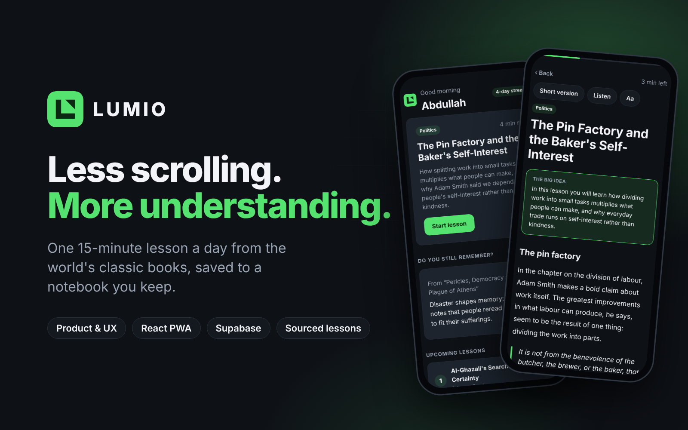
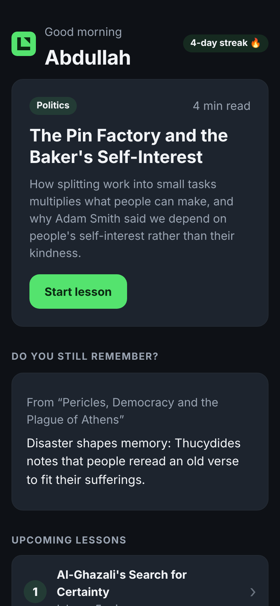
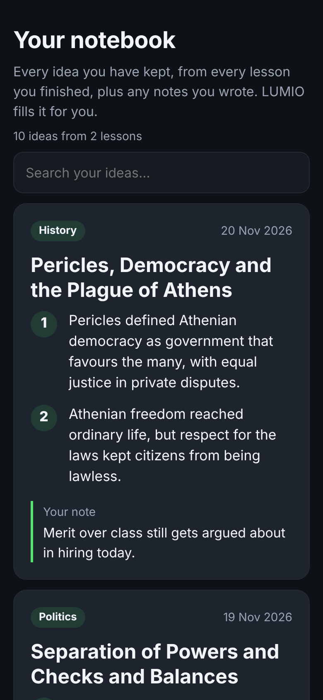

Case study · Product design & build
LUMIO: less scrolling, more understanding.
An installable reading app that swaps a daily scroll for one source-grounded lesson from classic books, and saves every takeaway to a notebook the reader keeps.

The problem
Most people want to learn regularly but give their spare minutes to feeds. Learning apps ask them to pick a course, build a plan and take quizzes, and they leave the first time they miss a day. Reading something good also leaves nothing behind: a week later the ideas are gone.
I wanted the opposite of a feed: one short, calm session a day that ends, and leaves the reader holding something.
The idea
LUMIO picks one 15-minute lesson a day from a curated library of classic books. Each lesson ends with three to five takeaways, and every takeaway is saved to a searchable notebook. There is nothing to choose, no quiz, and a streak that never nags.
One lesson a day
Three upcoming lessons are always prepared, so the home screen has one clear next step.
A notebook you keep
Takeaways and your own notes are saved automatically and searchable, so reading adds up.
Traceable sources
Every lesson lists the book passages it was built from, with licence information.



Screens are rendered from the app's own stylesheet with example reader data (name, streak and note).
Key decisions
A web app people install, not a store app
I restarted the product in November 2026 as a progressive web app. Android and desktop show an Install button, and iPhone uses Share, then Add to Home Screen. Readers get the app in seconds, and I ship updates without waiting for store review. The earlier React Native app stays in the project in case a store release makes sense later.
Lessons you can trace
Every lesson is built only from passages of real, licensed books, and nothing is shown to a reader until it has been checked.
- Length, structure and 3–5 takeaways are enforced.
- The lesson must name the concepts it was planned around.
- A quote is shown only if it appears word for word in the source book.
- A lesson that states figures not found in its sources is held back.
Private by design
Every table uses row-level security, so a reader can only see their own lessons, progress and notes. The app only ever holds a public key. The key that can write lessons stays on the server and is never shipped to the browser.
Readers never run out
Lessons are prepared ahead of time. When a reader finishes one, the next ready lesson moves into their queue automatically, so the app never shows an empty home screen.
The reading experience
- Big idea first. One sentence says what you will learn, so you know what you are getting.
- A real line from the book. A short quote, clearly attributed, makes it feel like reading the book.
- Why it matters, try this, think about it. The lesson ends by connecting the idea to daily life, with one small action and one open question.
- Choose how you read. A short version for busy days, a listen mode that reads the lesson aloud, and three text sizes.
- Report a problem. One tap to flag something that looks wrong, so accuracy stays ahead of everything else.
The library, in numbers
Subjects: Politics, History, Islam, Psychology, Science and Geopolitics. Figures are from the live library in November 2026.
Constraints and trade-offs
LUMIO is built for a small group of readers and started with no budget for paid services, so the system had to be simple and dependable.
- A reserve of ready lessons. Lessons are prepared ahead of time from the real library and released automatically as readers finish, so nothing depends on anything running in the background.
- Honest limits. The library leans towards older books, so modern topics are thin. Open textbooks are the planned way to widen it.
What I learned
- Constraints improve the product: designing for “the next lesson isn't ready yet” produced a system that fails gracefully.
- Trust is a feature. Showing sources and leaving out anything unverifiable matters more to a reader than a clever lesson.
- A product that ends is easier to return to than one that never does.
Next
- Watch five to ten real readers go from sign-up to a finished first lesson, and measure day-two and day-seven return.
- Add reminders, offline reading and series of related lessons.
- Widen the library with open-licence textbooks for modern subjects.